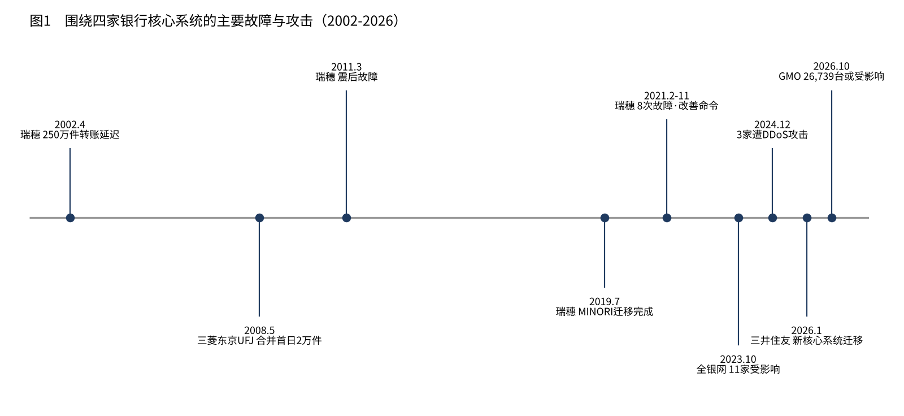
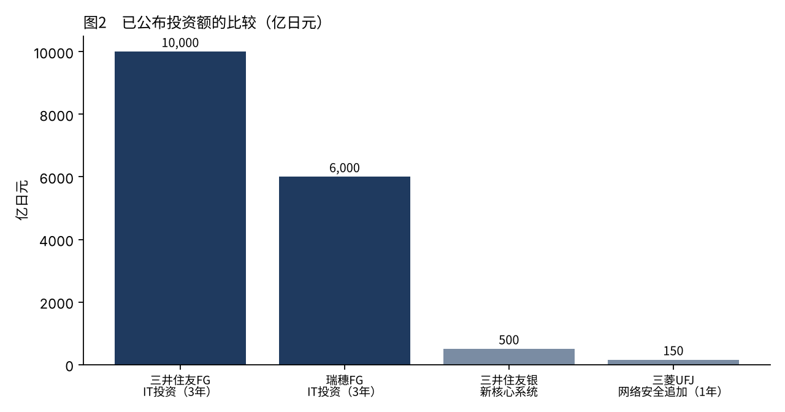

日本三大银行与里索那的核心系统，真的又旧又危险吗
2026年10月，GMO服务器遭非法入侵的消息公开的那一周，我持有的四只日本银行股一起下跌。在X上，我反复看到银行系统很脆弱的说法。
然而，用数字来说明这四家银行的核心系统究竟由什么构成、发生过哪些故障、在防御上花了多少钱的文章，并不多。
本文依据各行的公开资料以及金融厅、经产省的文件，逐一确认三菱UFJ、三井住友、瑞穗、里索那的核心系统，最后给出我自己对于是否危险的判断。
什么是核心系统。四家银行的中心仍然是大型主机
核心系统（账务系统）是银行的中心，记录存款余额、转账和贷款。它一旦停止，ATM和转账都会停止。
先说结论：四家银行核心系统的中心至今仍是大型主机（专用的大型计算机）。不过，网上银行和API等周边部分放在开放系统（普通服务器）上，正朝着两者结合的方向推进。还没有任何一家大型银行把全部系统搬到云上。
至于是否在使用老旧的COBOL语言，四家银行的公开资料中都没有写。
三井住友银行：1万亿日元的IT投资与2026年的迁移
三井住友银行的下一代核心系统，由NEC的新一代大型主机和开放系统平台组合而成。开放系统一侧放着实时复制全部账本的数据库，再通过API向外连接。
建设由日本总研承担，规模为总投资约500亿日元（约21.3亿元人民币，约3.16亿美元）、约2万人月。原本目标是2025财年完成迁移，计划后来改为2026财年内。为了迁移，2026年1月11日和12日暂停了ATM和网上银行，下一次暂停已公布为7月19日和20日。迁移是否已经完成，尚未公布。
在防御方面，三井住友金融集团在新的中期经营计划中，把3年的IT投资定为约1万亿日元（约425.4亿元人民币，约63.3亿美元），比上一期的8,000亿日元增加25%，据称是日本银行中的首次。专业人员超过850名，与欧美和亚洲的SOC联动，设有全天候监控体制。还成立了把高性能AI视为威胁的专门团队。
三菱UFJ银行：IBM大型主机，以及与GMO的合资公司
三菱UFJ银行的核心系统，在2008年合并时并入了原东京三菱银行的IBM系统。合并首日，Seven银行的ATM约有2万笔交易无法完成。
2024年10月，它与日本IBM合作，宣布向地方银行提供核心系统的共同平台，方式是在三菱UFJ银行的数据中心放置IBM大型主机。一位董事表示，对可靠性要求高的业务，是以大型主机为前提来考虑的。
另一方面，新设的数字银行的基础设施采用了Google Cloud。该银行于2026年9月取得银行牌照，计划在2027年1月至3月开始服务。
其CSIRT名为MUFG-CERT。2025财年，基础设施强化和系统相关费用增加了约600亿日元（约25.5亿元人民币，约3.8亿美元），其中网络安全约150亿日元（约6.4亿元人民币，约9,488万美元），生成式AI约100亿日元（约4.3亿元人民币，约6,325万美元）。2025年12月，它宣布与GMO互联网集团的子公司成立合资公司MUFG GMO Security，出资比例为三菱UFJ银行50.1%、GMO Cybersecurity by Ierae 40.0%、GMO互联网集团9.9%。有一家银行，正与这次事件的当事方在防御上合作。
瑞穗银行：MINORI与2021年的8次故障
瑞穗银行的核心系统叫MINORI。2018年6月开始迁移，2019年7月完成。它把原三家银行的核心系统合而为一，把大型主机从19台减到5台，由多家供应商共同建设。总投资额未公布。
故障的历史在四家中最沉重。2002年4月成立之初，约250万笔转账延迟；2011年3月地震刚过，汇兑处理延迟，ATM也停了。两次都收到了业务改善命令。
2021年2月28日，全国八成ATM停止，吞了银行卡和存折。此后故障持续，全年发生8次。11月26日金融厅发出业务改善命令，同一天财务省也依据外汇法发出了纠正命令。
从2023年起的3年里，计划投入约6,000亿日元（约255.2亿元人民币，约38亿美元）的IT投资，其中约七成用于防止故障再发和系统更新。MINORI开发至今已近10年，把多个系统迁移到云上的计划已经公布。
里索那银行：IBM大型主机，以及把成本降低46%的十年
里索那银行的核心系统一直以日本IBM的大型主机为中心运行。切换在2000年、2003年、2008年和2015年进行，2015年的切换实现了全天候运行。运维分散委托给NTT Data和日本IBM等多家公司。
它的特点在于降成本的方式。集团的系统成本从2003财年的931亿日元降到2014财年的500亿日元，减少了约46%。它在建设API平台向开放系统转移，并计划把信息系统的大型主机从9台减到7台。2026年3月发布了新的中期经营计划，但IT投资额和安全投资额无法从公开资料中确认。
跨越四家银行的故障与攻击
也有不限于一家银行的故障。2023年10月10日和11日的全银网故障，影响了三菱UFJ银行、里索那银行等11家银行。两天内，255万笔跨行转账和251万笔行内转账受到影响，87万笔跨行转账未能处理。原因是中继计算机更新时手续费计算程序的缺陷。
在攻击方面，2024年年末DDoS攻击接连发生。三菱UFJ银行的网上银行从12月26日起不稳定，28日早上恢复。里索那四家银行从12月29日晚到30日凌晨无法使用个人网上银行，2025年1月7日又出现同样的故障。瑞穗银行的Mizuho Direct也从12月31日早上起不稳定。三井住友银行的受损情况未能确认。
| 年月 | 银行 | 发生了什么 |
|---|---|---|
| 2002年4月 | 瑞穗 | 约250万笔转账延迟。业务改善命令 |
| 2008年5月 | 三菱东京UFJ | 合并首日约2万笔交易无法完成 |
| 2011年3月 | 瑞穗 | 地震后的故障。业务改善命令 |
| 2019年7月 | 瑞穗 | 完成向MINORI的迁移 |
| 2021年2至11月 | 瑞穗 | 故障8次。11月26日业务改善命令 |
| 2023年10月 | 全银网 | 11家银行受影响。87万笔跨行转账未处理 |
| 2024年12月 | 三菱UFJ、里索那、瑞穗 | DDoS攻击下网上银行不稳定 |
| 2026年1月 | 三井住友 | 为迁移新核心系统而暂停。MUFG GMO Security成立 |
| 2026年10月 | GMO旗下 | infoQ约89万条记录，Onamae.com有26,739台服务器可能受影响 |

在防御上花了多少钱
把公布的投资额排在一起，三井住友FG的3年1万亿日元和瑞穗FG的3年约6,000亿日元最为突出。三菱UFJ仅2025财年一年就在网络安全上追加了约150亿日元。里索那的数字不在投资额，而在成本一侧：十年削减46%。

金融厅于2024年10月4日制定了《金融领域网络安全指引》，并于同日施行。它要求由经营层主导、覆盖整个集团、重实质轻形式。2025年10月又修订了监督指针，要求在2026年6月底前强制采用抗钓鱼的多因素认证。跨行业演习Delta Wall也每年举行。
另一方面，经产省的DX报告指出，2025年以后每年可能产生最多12万亿日元的经济损失，并预计运行21年以上的核心系统的比例在2025年将升至六成。银行的核心系统也在其中。
我是这样看的
如果问旧不旧，那是旧的。四家银行的中心都是大型主机，除了瑞穗，其他几家都是在更新和使用2000年代之前建成的平台。但我认为，旧和危险是两回事。
看故障的历史，危险的不是旧，而是接缝。瑞穗的2021年发生在三家系统合并之后不久的运行中，2023年的全银网发生在更新作业的缺陷上，三菱UFJ的2008年发生在合并首日。事故发生在系统改变的时候。三井住友正在推进2026年的迁移，从这个意义上说，现在正是该盯着看的时期。
面对攻击，四家银行至少公布了投资的规模和体制。在我查到的范围内，没有找到把GMO事件和银行股下跌直接联系起来的报道。10月23日的银行股下跌，报道用长期利率的下降来解释。
所以这周我也一股四家银行的股票都没有卖。钱越大，越放在停摆时也扛得住的大型机构，这个想法没有变。我看的是三井住友的迁移能否顺利完成，以及故障发生时各行能以多快的速度公布什么。危不危险，我想用接缝和公布的速度来判断，而不是用旧不旧。
汇率：1 USD = 158.10 JPY / 1 USD = 6.7253 CNY（截至 2026年10月25日，人民币为10月15日中间价）
出处
- 三井住友银行《关于下一代核心系统》（2020年11月11日） https://www.smbc.co.jp/news/pdf/j20201111_01.pdf
- IT Leaders《日本总研以约500亿日元、2万人月建设三井住友银行下一代核心系统》（2022年11月9日） https://it.impress.co.jp/articles/-/24019
- 三井住友银行《因系统迁移暂停服务》（2025年7月29日） https://www2.smbc.co.jp/news/pdf/j20250729_01.pdf
- 三井住友银行《2026年暂停日程》（2026年1月19日） https://www.smbc.co.jp/news/pdf/j20260119_03.pdf
- SMBC GROUP REPORT 2026（IT投资与网络安全体制） https://www.smfg.co.jp/gr2026/pdf/2607_ird_24.pdf
- Newswitch《三菱UFJ银行与日本IBM面向地方银行的核心系统共同平台》（2024年10月3日） https://newswitch.jp/p/43139
- Google Cloud《MUFG新数字银行基础设施采用Google Cloud》（2025年5月27日） https://cloud.google.com/blog/ja/products/gcp/mufg-adopts-google-cloud-for-new-digital-bank-infrastructure?hl=ja
- 三菱UFJ金融集团《2025财年业绩投资者说明会》（2026年5月19日） https://www.mufg.jp/dam/ir/presentation/2025/pdf/speech2603_ja.pdf
- 三菱UFJ银行《关于设立MUFG GMO Security》（2025年12月2日） https://www.bk.mufg.jp/news/news2025/pdf/news1202.pdf
- 富士通《瑞穗金融集团的现代化》（2024年11月8日） https://global.fujitsu/ja-JP/insight/tl-mizuho-fg-modernization-20241108
- Business+IT《瑞穗银行第二次业务改善命令》（2021年11月26日） https://www.sbbit.jp/article/refers/75545
- Business+IT《瑞穗FG三年约6,000亿日元IT投资》（2023年5月15日） https://www.sbbit.jp/article/refers/114098
- 里索那控股 IR资料（2022年2月17日） https://www.resona-gr.co.jp/holdings/investors/ir/presentation/pdf/20220217_2.pdf
- 里索那控股 IR资料（2015年4月23日） https://www.resona-gr.co.jp/holdings/investors/ir/presentation/pdf/20150423.pdf
- Business Insider Japan《全银网故障的影响》（2023年10月12日） https://www.businessinsider.jp/article/276648/
- Mynavi News《年末年初对金融机构的DDoS攻击》（2025年1月10日） https://news.mynavi.jp/techplus/article/20250110-3104063/
- 金融厅《金融领域网络安全指引》（2024年10月4日） https://www.fsa.go.jp/news/r6/sonota/20241004/20241004.html
- 金融厅《与行业团体意见交换的主要论点》（2026年1月） https://www.fsa.go.jp/common/ronten/202601/05.pdf
- 经济产业省《DX报告》（2018年9月7日） https://www.meti.go.jp/policy/it_policy/dx/20180907_01.pdf
照片：Jason Dent／Tim Evans（Unsplash）。图表由YUKI CAPITAL制作
每天的数字和判断，我都记录在X上。